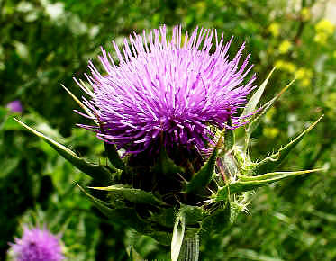
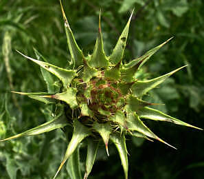

Le chardon Marie ou silybum marianum est une plante bisannuelle considérée comme mauvaise herbe ; il porte encore bien d'autres noms comme silybe de Marie, lait de Notre-Dame, artichaut sauvage, chardon marbré, etc... Il pousse au bord des routes, dans les terrains vagues ou les cultures ; il appartient à la famille des composées ou astéracées.
C'est une plante vigoureuse qui peut atteindre 1,50 m, elle possède une racine pivotante et une forte tige cylindrique cannelée.
Les grandes feuilles alternes, à découpures pennées et épineuses, permettent d'identifier facilement la plante, elles ont une face supérieure vert pâle, luisante et surtout parcourue par un réseau de marbrures blanches qui suivent le tracé des nervures.
Les fleurs sont de gros capitules solitaires pourpres qui surmontent un volumineux involucre rappelant celui de l'artichaut mais dont les bractées sont terminées par de solides épines.
Les fruits sont des akènes allongés, noirâtres, lisses et prolongés par des soies.
Le chardon Marie est une plante médicinale précieuse, elle contient des flavonoÏdes dont l'ensemble porte le nom de silymarine ; ils ont une action bienfaitrice sur les intoxications hépatiques, protègent les paries saines de cet organe et facilitent la régénération des parties atteintes. Ils sont administrés notamment en cas d'intoxication par les champignons.
Par ailleurs, cette plante soigne les troubles digestifs d'origine hépatho-biliaire et stimulerait les défenses immunitaires.
Le traitement par la silymarine extraite des graines doit âtre prescrit par un médecin.
Par contre, toutes les parties de la plante sont comestibles.